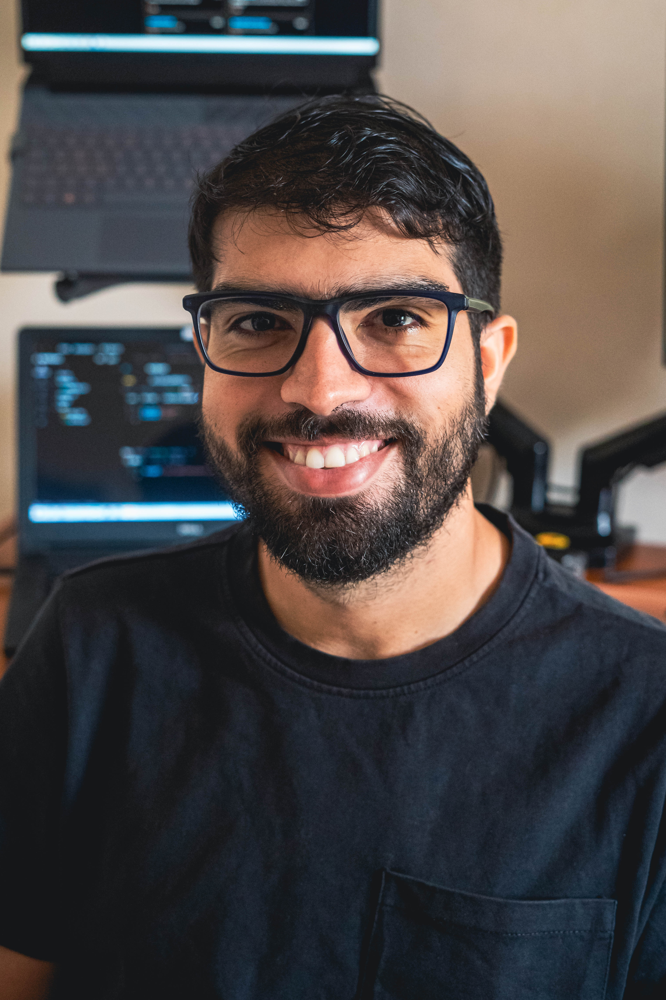

Apaixonado por Java e Spring Boot. Formado em Sistemas de Informação, construindo APIs robustas e compartilhando minha evolução através de projetos open source.

Um pouco da minha história
Me chamo João Felipe, tenho 29 anos e sou natural de São Luís, Maranhão. Formado em Sistemas de Informação, desenvolvi ao longo dos anos uma grande afinidade com a linguagem Java e o ecossistema Spring.
Estou sempre buscando me aprimorar e acredito que compartilhar conhecimento é uma das melhores formas de aprender. Por isso, mantenho projetos open source e documento minha evolução como desenvolvedor.
Atualmente focado em back-end com Java e Spring Boot, construindo APIs RESTful e aprendendo as melhores práticas do mercado.
Ferramentas que uso no dia a dia
Aplicações que desenvolvi durante minha jornada
API RESTful completa para gerenciamento de produtos. Operações de cadastro, consulta, atualização e exclusão com banco de dados em memória H2.
Estou aberto a oportunidades e colaborações